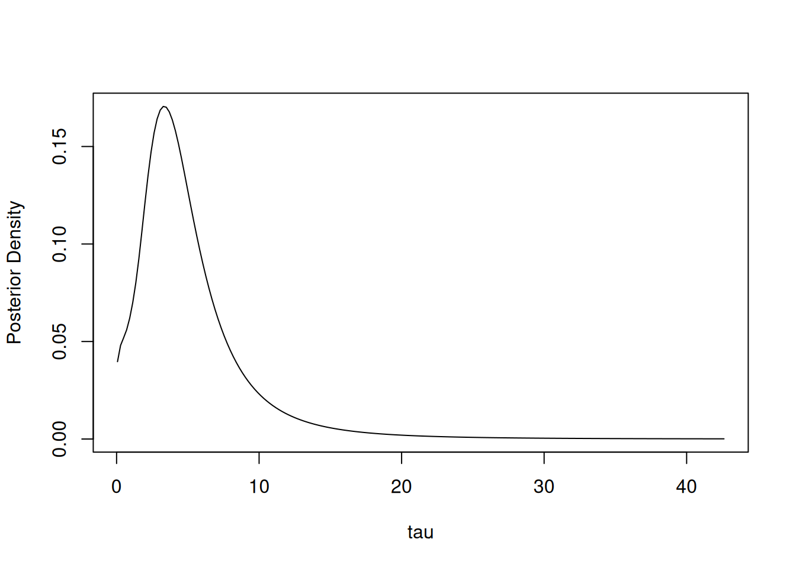

Chapter 9 Laplace, AGHQ, and nested approximations
The NIMBLE algorithm library includes a growing set of non-MCMC algorithms including likelihood-based algorithms.
In this chapter we discuss Laplace approximation and the closely related adaptive Gauss-Hermite quadrature (AGHQ) approximation for maximum likelihood estimation, as well as INLA-like nested approximations that use Laplace/AGHQ methods for approximate marginalization for deterministic Bayesian estimation.
9.1 Laplace approximation and adaptive Gauss-Hermite quadrature (AGHQ)
As of NIMBLE version 1.4.0, NIMBLE’s Laplace and AGHQ approximation live in the nimbleQuad package. Please load that package before trying to use these algorithms.
Many hierarchical models include continuous random effects that must be integrated over to obtain the (marginal) likelihood of the parameters given the data. Laplace approximation and adaptive Gauss-Hermite quadrature (AGHQ) are often accurate and fast approximations for doing so. Laplace is simply AGHQ with a single quadrature point (the conditional mode of the random effects).
NIMBLE provides these algorithms via buildLaplace and buildAGHQuad (the
former simply calls the latter), which take advantage of the automatic
differentiation features introduced in version 1.0.0.
Next we will show how to use NIMBLE’s Laplace approximation, which uses derivatives internally, to get maximum (approximate) likelihood estimates for a GLMM model.
Additional details on Laplace and on AGHQ can be found by running help(buildLaplace).
Laplace approximation is equivalent to first-order adaptive Gauss-Hermite quadrature, which is also available (via buildAGHQ and runAGHQ), although here we will focus on Laplace approximation only. In this context, Laplace approximation approximates the integral over continuous random effects needed to calculate the likelihood. Hence, it gives an approximate likelihood (often quite accurate) that can be used for maximum likelihood estimation. Note that the Laplace approximation uses second derivatives, and the gradient of the Laplace approximation (used for finding the MLE efficiently) uses third derivatives. These are described in detail by Skaug and Fournier (2006) and Fournier et al. (2012).
9.1.1 GLMM example
We’ll re-introduce the simple Poisson Generalized Linear Mixed Model (GLMM) example model from Section 7.11.2.1 and use Laplace approximation on it. There will be 10 groups (i) of 5 observations (j) each. Each observation has a covariate, X, and each group has a random effect ran_eff. Here is the model code:
model_code <- nimbleCode({
# priors
intercept ~ dnorm(0, sd = 100)
beta ~ dnorm(0, sd = 100)
sigma ~ dhalfflat()
# random effects and data
for(i in 1:10) {
# random effects
ran_eff[i] ~ dnorm(0, sd = sigma)
for(j in 1:5) {
# data
y[i,j] ~ dpois(exp(intercept + beta*X[i,j] + ran_eff[i]))
}
}
})Note that we changed the prior on sigma to avoid having an upper bound. Prior distributions are not included in maximum likelihood using the Laplace approximation but do indicate the range of valid values. We recommend caution in using priors for variance component parameters (standard deviations, variances, precisions) that have a finite upper bound (e.g., sigma ~ dunif(0, 100)), because the probit transformation applied in that case may result in poor optimization performance.
We’ll simulate some values for X.
Next, we build the model, including buildDerivs=TRUE, which is needed to use derivatives with a model. Internally Laplace/AGHQ approximation use derivatives from NIMBLE’s automatic differentiation (AD) system to build the approximation to the marginal likelihood.
model <- nimbleModel(model_code, constants = list(X = X), calculate = FALSE,
buildDerivs = TRUE) # Here is the argument needed for AD.As preparation for the Laplace examples below, we need to finish setting up the GLMM. We could have provided data in the call to nimbleModel, but instead we will simulate it using the model itself. Specifically, we will set parameter values, simulate data values, and then set those as the data to use.
model$intercept <- 0
model$beta <- 0.2
model$sigma <- 0.5
model$calculate() # This will return NA because the model is not fully initialized.## [1] NAmodel$simulate(model$getDependencies('ran_eff'))
model$calculate() # Now the model is fully initialized: all nodes have valid values.## [1] -78.44085Finally, we will make a compiled version of the model.
9.1.2 Using Laplace approximation
To create a Laplace approximation specialized to the parameters of interest for this model, we use the nimbleFunction buildLaplace. For many models, the setup code in buildLaplace will automatically determine the random effects to be integrated over and the associated nodes to calculate. In fact, if you omit the parameter nodes, it will assume that all top-level nodes in the model should be treated as parameters. If fine-grained control is needed, these various sets of nodes can be input directly into buildLaplace. To see what default handling of nodes is being done for your model, use setupMargNodes with the same node inputs as buildLaplace.
library(nimbleQuad)
glmm_laplace <- buildLaplace(model, paramNodes = c('intercept','beta','sigma'))
Cglmm_laplace <- compileNimble(glmm_laplace, project = model)With the compiled Laplace approximation, we can now find the MLE and related information such as standard errors.
## $params
## estimate stdError
## intercept -0.1491944 0.2464880
## beta 0.1935212 0.1467230
## sigma 0.5703362 0.2066515
##
## $randomEffects
## estimate stdError
## ran_eff[1] -0.33711373 0.4305830
## ran_eff[2] -0.02964535 0.3987838
## ran_eff[3] 0.40575212 0.3858675
## ran_eff[4] 1.04768889 0.3779772
## ran_eff[5] -0.36731650 0.4290567
## ran_eff[6] 0.26907207 0.3863272
## ran_eff[7] -0.54950702 0.4654195
## ran_eff[8] -0.11864461 0.4175452
## ran_eff[9] 0.10006643 0.3926128
## ran_eff[10] -0.04411292 0.3971147
##
## $vcov
## intercept beta sigma
## intercept 0.060756334 -0.002691102 -0.014082732
## beta -0.002691102 0.021527634 -0.005098509
## sigma -0.014082732 -0.005098509 0.042704860
##
## $logLik
## [1] -63.44875
##
## $df
## [1] 3
##
## $originalScale
## [1] TRUEOne of output elements is the maximized log likelihood (logLik), which is useful for model comparison.
Finally, let’s confirm that it worked by comparing to results from package glmmTMB. In this case, NIMBLE’s Laplace approximation is faster than glmmTMB (on the machine used here), but that is not the point of this example. Here our interest is in checking that NIMBLE’s Laplace approximation worked correctly in a case where we have an established tool such as glmmTMB.
library(glmmTMB)
y <- as.numeric(model$y) # Re-arrange inputs for call to glmmTMB
X <- as.numeric(X)
group <- rep(1:10, 5)
data <- as.data.frame(cbind(X,y,group))
tmb_fit <- glmmTMB(y ~ X + (1 | group), family = poisson, data = data)
summary(tmb_fit)## Family: poisson ( log )
## Formula: y ~ X + (1 | group)
## Data: data
##
## AIC BIC logLik deviance df.resid
## 132.9 138.6 -63.4 126.9 47
##
## Random effects:
##
## Conditional model:
## Groups Name Variance Std.Dev.
## group (Intercept) 0.3253 0.5703
## Number of obs: 50, groups: group, 10
##
## Conditional model:
## Estimate Std. Error z value Pr(>|z|)
## (Intercept) -0.1492 0.2465 -0.605 0.545
## X 0.1935 0.1467 1.319 0.187## 'log Lik.' -63.44875 (df=3)The results match within numerical tolerance typical of optimization problems. Specifically, the coefficients for (Intercept) and X match NIMBLE’s Intercept and beta, the random effects standard deviation for group matches NIMBLE’s sigma, and the standard errors match.
9.1.3 Using the Laplace approximation methods directly
If one wants finer grain control over using the approximation, one can use the methods provided by buildLaplace. These include calculating the Laplace approximation for some input parameter values, calculating its gradient, and maximizing the Laplace-approximated likelihood. Here we’ll show some of these steps.
# Get the Laplace approximation for one set of parameter values.
Cglmm_laplace$calcLaplace(c(0, 0, 1)) ## [1] -65.57246## [1] -1.866840 8.001648 -4.059555MLE <- Cglmm_laplace$findMLE(c(0, 0, 1)) # Find the (approximate) MLE.
MLE$par # MLE parameter values## [1] -0.1491982 0.1935269 0.5703413## [1] -63.44875The final outputs show the MLE for intercept, beta, and sigma, followed by the maximum (approximate) likelihood.
More information about the MLE can be obtained in two ways. The summary method
can give estimated random effects and standard errors as well as the variance-covariance matrix
for the parameters and/or the random effects. The summaryLaplace function
returns similar information but with names included in a more useful way. Here is some example code:
## [1] -0.33711487 -0.02964301 0.40575572 1.04769223 -0.36731868 0.26907375
## [7] -0.54951161 -0.11864177 0.10006955 -0.04411124## estimate stdError
## intercept -0.1491982 0.2464895
## beta 0.1935269 0.1467230
## sigma 0.5703413 0.2066531To find the posterior mode (maximum a posteriori estimate), one can call findMAP instead of findMLE.
To run a regularized regression that uses the prior as a penalty but excludes the Jacobian of the transformation, one can run Cglmm_laplace$optimize with includePrior = TRUE and includeJacobian = FALSE, e.g., estimate <- Cglmm_laplace$optimize(c(0, 0, 1), includePrior = TRUE, includeJacobian = FALSE). (Note that findMLE and findMAP are equivalent to running optimize with includePrior and includeJacobian set appropriately.)
9.1.4 Changing the optimization methods
When finding the MLE via Laplace approximation or adaptive Gauss-Hermite quadrature (AGHQ), there are two numerical optimizations: (1) maximizing the joint log-likelihood of random effects and data given a set of parameter values to construct the approximation to the marginal log-likelihood at the given parameter values, and (2) maximizing the approximation to the marginal log-likelihood over the parameter values. Optimization (1) is the “inner” optimization and optimization (2) is the “outer” optimization.
Finding the MLE via Laplace approximation may be sensitive to the optimization methods used, in particular the choice of optimizer for the inner optimization, and the “BFGS” optimizer available through optim() may not perform well for inner optimization.
As of version 1.3.0, the default choices for both the inner and outer optimization use R’s nlminb optimizer.
Users can choose a different optimizer for both of the optimizations.
To change the inner or outer optimizers, one can use the innerOptimMethod and outerOptimMethod elements of the control list argument to buildLaplace. One can modify various settings that control the behavior of the inner and outer optimizers via control as well. See help(buildLaplace) for more details.
Once a Laplace approximation is built, one can use updateSettings to modify the choices of optimizers and various settings that control the behavior of the inner and outer optimizers (see help(buildLaplace) for details).
By default, NIMBLE provides various optimization methods available through R’s optim() as well as R’s nlminb method and the BOBYQA method from the nloptr package (by specifying 'bobyqa'). Users can also provide their own optimization function in R that they can then use with Laplace approximation. User optimization functions must have a particular set and order of arguments and must first be registered with NIMBLE via nimOptimMethod. See help(nimOptim) for more details.
Here’s an example of setting up the Newton method optimizer from the TMB package as the inner optimizer for use with NIMBLE’s Laplace approximation. (Note that NIMBLE and TMB have distinct AD systems and Laplace approximation implementations; here we simply use the TMB::newton optimization function.)
library(TMB)
library(Matrix)
## Create an R wrapper function that has the interface needed for NIMBLE
## and wraps the optimizer of interest.
nimbleTMBnewton <- function(par, fn, gr, he, lower, upper, control, hessian) {
## Wrap `he` as return value needs to be of class `dsCMatrix`.
he_matrix <- function(p) Matrix(he(p), doDiag = FALSE, sparse = TRUE)
invalid <- function(x) is.null(x) || is.na(x) || is.infinite(x)
if(invalid(control$trace)) control$trace <- 1
if(invalid(control$maxit)) control$maxit <- 100
if(invalid(control$reltol)) control$reltol <- 1e-8
res <- newton(par, fn, gr, he_matrix,
trace = control$trace, maxit = control$maxit, tol = control$reltol)
## Additional arguments (e.g., `alpha` and `tol10`) can be hard-coded in `newton()` call.
ans <- list(
## What is handled in the return is fairly particular, so often needs conversion
## from a given method such as TMB::newton.
par = res$par,
value = res$value,
counts = c(0, 0, 0), # Counts of fn/gr/he calls, but these are not counted by TMB::newton.
evaluations = res$iterations,
hessian = NULL, # TMB::newton gives a `dsCMatrix` but we need a base R matrix.
message = "ran by TMB::newton",
convergence = 0 # TMB::newton does not return a convergence code so give 0 (converged).
)
return(ans)
}
## Register the optimizer with NIMBLE.
nimOptimMethod("nimbleTMBnewton", nimbleTMBnewton)
## Use the optimizer for the inner optimization when finding the Laplace MLE.
glmm_laplace <- buildLaplace(model, c('intercept','beta','sigma'),
control = list(innerOptimMethod = "nimbleTMBnewton"))9.2 Nested approximation (INLA-like) methods
NIMBLE version 1.4.0 introduces a nested approximation method that provides approximate posterior inference using methodology similar to the well-known INLA approach (Rue et al. 2009; Martins et al. 2013), implemented in the R-INLA package and to the related methods for extended Gaussian latent models (EGLMs) of Stringer et al. (2023), implemented in the aghq R package.
In general, such nested approximations build on Laplace approximation, which provides an approximate marginal posterior for model (hyper)parameters, integrating (marginalizing) over latent nodes. Then instead of maximizing the approximation, one approximates the marginal posterior of the (hyper)parameters on a carefully-chosen set of points. Inference for individual (hyper)parameters is done by numerical approximation, numerical integration, or sampling from an approximation to the marginal posterior. Inference for the latent nodes is done via numerical integration or via sampling from a mixture (over the hyperparameter points) of multivariate normal distributions.
Our implementation in NIMBLE borrows heavily from the INLA and EGLM approaches.
Here we list some of the similarities and differences from INLA and the EGLM approach (aghq package):
- Like EGLM, we use automatic differentiation to calculate the Laplace-approximated marginal likelihood.
- Like EGLM, we take the latent nodes to be only the latent stochastic parameters in the model, without including the additive predictor values as done in INLA.
- For marginal inference on a chosen univariate (hyper)parameter we provide the univariate asymmetric Gaussian approximation used by INLA and also (for increased accuracy at additional computational expense) numerical integration via AGHQ as in EGLM.
- For joint inference on the (hyper)parameters we provide simulation from the joint asymmetric Gaussian approximation as done in INLA.
- For inference on the latent nodes, we provide joint simulation from a multivariate normal mixture over the (hyper)parameter grid points as done in EGLM and also available in INLA. Unlike in INLA, we do not provide univariate latent inference using deterministic nested Laplace approximation. The simulation-based approach may not be as accurate, but it allows for joint inference, including inference on quantities that depend on more than one latent node.
- Unlike either EGLM or INLA, latent nodes are not required to have a joint normal distribution, though accuracy may be less when the latent nodes have other distributions.
- For latent nodes whose conditional distributions factor into univariate conditionally independent sets, the Laplace approximation is a product of univariate approximations, and one can instead use NIMBLE’s AGHQ approximation for higher accuracy.
- We allow the user to choose the grid used for the (hyper)parameters. By default for \(d>2\) parameters, we use the CCD grid used by INLA, but one can choose to use the AGHQ grid as used in EGLM or provide one’s own grid.
9.2.1 Overview of the methodology
NIMBLE’s nested approximation consists of several pieces, with different options that allow a user to choose how the approximation is done. We briefly describe the pieces here. For simplicity, we refer to the (hyper)parameters simply as “parameters”.
9.2.1.1 Marginalization over the latent nodes
We approximately marginalize (integrate) over the latent nodes to approximate the marginal joint distribution of the parameters. This uses Laplace approximation and is sometimes referred to as the “inner” marginalization. The Laplace approximation is computed using the gradient and Hessian with respect to the latent nodes for a given set of parameter values.
In the case that the conditional distributions of the latent nodes factor into univariate conditionally-independent sets of nodes (conditional on the parameters), this approximation by default uses the product of univariate Laplace approximations and in NIMBLE can be made more accurate by using AGHQ with more than one quadrature point.
9.2.1.2 Approximating the marginal parameter density on a grid
In order to simulate from the posterior distribution for the latent nodes (or to estimate the marginal likelihood), one needs to evaluate the joint parameter posterior density on a grid of points.
NIMBLE primarily offers the options of using a CCD grid (as used by INLA) or an AGHQ grid (as used in the EGLM approach). While the AGHQ grid is expected to be more accurate, the CCD grid uses fewer points and is therefore less computationally intensive.
For \(d <= 2\) NIMBLE defaults to the AGHQ grid and otherwise uses the CCD grid.
NIMBLE also allows users to provide their own grid.
9.2.1.3 Joint inference for latent nodes
NIMBLE provides the ability to simulate the latent nodes from a mixture of multivariate Gaussian distributions, mixing over the parameter values at the grid points discussed above. The multivariate Gaussian distribution is based on the Laplace approximation for the latent nodes, which provides the mean and variance conditional on the parameter value at the grid point. The weights in the mixture are based on the Laplace-approximated marginal density (for the parameters and data, jointly), with stratified sampling to reduce variance.
INLA adjusts the latent node marginals with a correction for the mean and skewness via a Gaussian copula to correspond with a univariate skew-normal approximation for each latent node. We have not implemented such an approximation so no adjustment is done in NIMBLE.
9.2.1.4 Univariate inference for parameters
NIMBLE offers two approaches for univariate marginal inference for individual parameters. The first is a computationally-efficient integration-free method that mimics that used by INLA (Martins et al. 2013). This uses a joint asymmetric Gaussian distribution approximation as the marginal joint posterior of the parameters and allows one to calculate the density at individual evaluation points for the univariate marginals. NIMBLE calculates the univariate marginal density on a fine grid of evaluation points, from which one can build a spline-based approximation to the marginal density that can be used to compute moments and quantiles for univariate inference.
The second, more accurate approach, is to use \(d-1\)-dimensional AGHQ to integrate over the Laplace-approximated joint marginal distribution for the parameters. This can greatly improve accuracy, but can be computationally expensive unless \(d\) is quite small (e.g., 2-4), or even if the number of latent node elements is quite large (which makes the Laplace approximation expensive). Because of the expense, we only take this approach if requested by the user, and we allow the user to choose the specific parameter(s) for which they want to estimate marginals with this approach.
Note that in most cases this inference can be provided on the original scale of the parameters provided by the user in the NIMBLE model. However, all calculations are done in a transformed space in which the parameters are unconstrained. This reduces the dimension of the parameter space in the case of the Dirichlet, Wishart, and LKJ distributions and there is no way to analytically determine the univariate marginals on the original (user-defined) scale because of the multivariate transformation and change of dimension. For inference on the original scale in such cases, one needs to use simulations from the approximate joint distribution of the parameters, discussed next.
9.2.1.5 Joint inference for parameters
If one is interested in joint inference for the parameters (or inference on functions of more than one parameter), NIMBLE provides the ability to simulate from the asymmetric multivariate Gaussian distribution approximation to the marginal joint distribution of the parameters that is used by INLA (Martins et al. 2013). The approximation is done in a transformed space in which the parameters are unconstrained (this can sometimes reduce the dimension of the parameter vector such as with the Dirichlet, Wishart, and LKJ distributions). In the transformed space, a two-piece split normal distribution (which allows for skew in both directions) is used for each univariate component after rotating the transformed parameters based on the Hessian at the maximum to account for the correlation structure.
As also done in INLA, we use a Gaussian copula to adjust the simulated parameter values, in a univariate fashion, to match the univariate marginal distributions estimated either from the integration-free or AGHQ approaches.
9.2.1.6 Approximate marginal likelihood
The marginal likelihood for a model integrates over all parameters (including both ‘parameters’ discussed above and latent nodes). This can be useful for model selection, but it is not well-defined if any prior distributions are improper and is not reliable for diffuse prior distributions.
In NIMBLE’s nested approximation, the marginal likelihood is approximated either based on the approximate Gaussian distribution for the parameters used by INLA or via AGHQ using the AGHQ grid weights and associated Laplace-approximated parameter density values.
9.2.1.7 Determining latent nodes and parameters
By default, NIMBLE’s nested approximation will try to automatically determine the node sets, selecting random effects and regression fixed effects (coefficients) as the “latent nodes” and other unknown quantities (e.g., variance components and parameters of random effects distributions) as “parameters” (also often referred to as “hyperparameters”).
Given the computations involved, it is best to have the number of parameters be relatively small, such as fewer than 10.
Note that the treatment of fixed effects differs between the nested approximation and NIMBLE’s Laplace approximation. In Laplace approximation, fixed effects are treated as parameters of interest and maximized with respect to, rather than being marginalized over. In the nested approximation, they are marginalized over and inference on them can be done based on simulated values. One advantage of grouping fixed effects with random effects is that one can make simulation-based inference on quantities that depend on both sets of effects, such a regression-style linear predictors.
It is also possible to choose which nodes go in which set (Section 9.2.2.2). One might choose to include fixed effects in the parameter set, akin to how Laplace approximation works. Another situation where one might configure this manually is if random effects in a model are specified in a “non-centered” parameterization such as:
\[ \eta_i = \mu + \sigma b_i \] \[ b_i \sim \mathcal{N}(0, 1) \]
In this parameterization, the random effects, \(b_i\), do not depend on any parameters because \(\mu\) and \(\sigma\) are involved directly in the linear predictor, \(\eta_i\). This stands in contrast to the common centered parameterization, with \(b_i \sim \mathcal{N}(\mu, \sigma)\). Because each \(b_i\) does not depend on any parameters, NIMBLE’s nested approximation node determination algorithm would by default put the \(b_i\) nodes into the parameter set, which in general would result in very slow computation (because there would be a large number of parameters). (And in reality this would generally lead to a failure to build the algorithm because there would be no latent nodes found.)
One further note is that it can be advantageous computationally to have fixed effects in the parameter set. This can sometimes allow NIMBLE to set up a product of lower-dimensional Laplace approximations instead of one higher-dimensional Laplace approximation. However, the benefit of having a product of Laplace approximations trades off with the higher-dimensionality of the parameter vector, which increases computation. How these trade off in a particular modeling context can be worth experimentation by the user.
9.2.1.8 Computational bottlenecks
To sample the latent nodes, the algorithm needs to find the weights and the parameters of the multivariate normal approximation to the latent nodes at each point in the grid of parameter values. For a large number of parameters this can be expensive, because Laplace approximation is done at many grid points. For a large number of latent node elements, even a single Laplace approximation at a single set of parameter values can be expensive. Computing the parameters of this approximation involves optimization over a space whose dimension is the number of latent node elements, as well as computation of the Hessian at the maximum. Furthermore, for inference, one then needs to simulate from the high-dimensional multivariate normal.
To approximate the univariate marginals for the parameters via AGHQ, this requires \(d-1\)-dimensional AGHQ, which can be expensive, because the number of quadrature points grows as \((d-1)^k\) where \(k\) is the number of Gauss-Hermite quadrature grid points in one dimension. Often this would be chosen to be small, such as 3 or 5, but even then the computations increase rapidly in \(d\).
9.2.2 Using NIMBLE’s nested approximation
Next we’ll give example usage of NIMBLE’s nested approximation. Further details are available in the usual R help content for the various functions.
The core functions are buildNestedApprox and runNestedApprox. These are analagous to the “build” and “run” functions for MCMC and for Laplace.
buildNestedApproxsets up the approximation for a model of interest and allows the user to control various aspects of how the approximation is done. It returns an uncompiled nested approximation algorithm.runNestedApproxruns the basic steps of the approximation, giving initial univariate marginal parameter inference (and optionally allowing the user to request latent node or parameter samples). It returns a nested approximation (nestedApprox) object.- Various additional functions can be applied to the nested approximation object to do further components of the approximation, including:
improveParamMarginals: use AGHQ to improve marginal parameter inference relative to the default inference based on the asymmetric Gaussian approximation.sampleLatents: sample from the approximate joint distribution of the latent nodes (the mixture over parameter grid points of multivariate normal distributions).sampleParams: sample from the asymmetric Gaussian approximation for the parameters.calcMarginalLogLikImproved: use AGHQ to improve estimation of the marginal likelihood relative to the default estimate based on the asymmetric Gaussian approximation.{d,e,q,r}marginalandplotMarginal: estimate the density (d), expectations (e), and quantiles (q) for a univariate marginal; sample from the marginal (r); and plot the marginal density.
9.2.2.1 Example use
We’ll use the penicillin example from the faraway package, which has data on penicillin production as a function of treatment (four levels) and blend (five levels). The treatment is considered as a fixed effect (note the constant, large variance/small precision for b[i]) while the blend/block is considered as a random effect. Note that because of the normal likelihood and normal priors for the latent nodes, the conditional distribution for the latent nodes given the data and hyperparameters is a multivariate normal, so the Laplace approximation in this case is exact (and one could also marginalize analytically before carrying out maximum likelihood estimation or MCMC). In many uses of nested approximation, the likelihood is not normal, but the latent node distribution is.
data(penicillin, package="faraway")
code <- nimbleCode({
for(i in 1:n) {
mu[i] <- inprod(b[1:nTreat], x[i, 1:nTreat]) + re[blend[i]]
y[i] ~ dnorm(mu[i], sd = sigma)
}
sigma ~ dunif(0, 100)
tau ~ dunif(0, 100)
for( i in 1:nTreat ){ b[i] ~ dnorm(0, sd = 1000) }
for( i in 1:nBlend ){ re[i] ~ dnorm(0, sd = tau) }
})
X <- model.matrix(~treat, data = penicillin)
data = list(y = penicillin$yield)
constants = list(nTreat = 4, nBlend = 5, n = nrow(penicillin),
x = X, blend = as.numeric(penicillin$blend))
inits <- list(sigma = 1, tau = 1, b = c(mean(data$y), rep(0,3)), re = rep(0,5))
model <- nimbleModel(code, data = data, constants = constants,
inits = inits, buildDerivs = TRUE)
comp_model <- compileNimble(model)Given a NIMBLE model, we can build (and compile) our nested approximation.
## Building nested posterior approximation for the following node sets:
## - parameter nodes: sigma, tau
## - latent nodes: b (4 elements), re (5 elements)
## with AGHQ grid for the parameters and Laplace approximation for the latent nodes.## Building Laplace approximation.## Compiling
## [Note] This may take a minute.
## [Note] Use 'showCompilerOutput = TRUE' to see C++ compilation details.Note that NIMBLE has automatically put the two variance components into the parameters and the fixed and random effects into the latent nodes. As described below, one can change the node sets if desired by passing paramNodes and/or latentNodes.
Because there are only two parameter nodes, an AGHQ grid for the parameters is used by default.
Next we run our nested approximation, getting back initial inference on the parameters, which is based on the asymmetric Gaussian approximation.
# To prefer fixed rather than scientific notation for easier viewing.
options(scipen = 2)
result <- runNestedApprox(comp_approx)## Finding posterior mode for parameter(s).## Model (hyper)parameters:
## mean sd 2.5% 25% 50% 75% 97.5%
## sigma 4.713701 0.9986374 3.116351 4.001788 4.586367 5.294832 7.006779
## tau 5.092328 2.8820651 1.541987 3.077404 4.421835 6.363080 12.497136
##
## Marginal log-likelihood (asymmetric Gaussian approximation): -89.95543(*)
## (*) Invalid for improper priors and may not be useful for non-informative priors.For small models this initial step generally won’t take too long, but even for large models or a large number of parameters, this step will generally be faster than the steps shown below because the asymmetric Gaussian distribution approximation for the parameters can be computed quickly, only requiring maximization and computation of the Hessian for the Laplace approximation (that said that could take some time when there is a large number of latent nodes) followed by some simple calculations.
Note that given the vague priors for the parameters used here, the marginal likelihood is probably not useful.
Now, let’s refine our estimation of the parameters by using AGHQ in place of the asymmetric Gaussian approximation. That does \(d-1\) dimensional AGHQ (here simply 1-d AGHQ) for each parameter requested (by default all of the parameters).
## Approximating 1 individual parameter marginal density via AGHQ:
## - calculating inner AGHQ/Laplace approximation at (5) marginal points
## with 3 quadrature grid points (one dot per grid point): (1)...(2)...(3)...(4)...(5)...## Model (hyper)parameters:
## mean sd 2.5% 25% 50% 75% 97.5%
## sigma 4.713701 0.9986374 3.116351 4.001788 4.586367 5.294832 7.006779
## tau 5.314975 4.1157021 0.883100 2.828764 4.339861 6.501641 16.098079
##
## Marginal log-likelihood (asymmetric Gaussian approximation): -89.95543(*)
## (*) Invalid for improper priors and may not be useful for non-informative priors.We see that the inference for tau has changed somewhat, in particular the more extreme quantiles.
There are two quantities that control the accuracy of the AGHQ marginal estimate. The first is the number of grid points in the AGHQ numerical integration where \(k\) (nQuad) is the number of points in one dimension. More is better for accuracy but the computational cost grows as \((d-1)^k\). The marginal density is estimated at each of a set of evaluation points of values of the parameter (nMarginalGrid points), using AGHQ for each point, after which a spline is fit to estimate the full marginal density.
By default we use three quadrature points in each dimension and five evaluation points.
If we increase the number of evaluation points, we see it has some effect on the inference.
## Approximating 1 individual parameter marginal density via AGHQ:
## - calculating inner AGHQ/Laplace approximation at (9) marginal points
## with 3 quadrature grid points (one dot per grid point): (1)...(2)...(3)...(4)...(5)...(6)...(7)...(8)...(9)...## Model (hyper)parameters:
## mean sd 2.5% 25% 50% 75% 97.5%
## sigma 4.713701 0.9986374 3.1163510 4.001788 4.586367 5.294832 7.006779
## tau 5.252378 4.3212129 0.5634483 2.756103 4.263204 6.441046 16.103280
##
## Marginal log-likelihood (asymmetric Gaussian approximation): -89.95543(*)
## (*) Invalid for improper priors and may not be useful for non-informative priors.If we increase the accuracy of the AGHQ integration, there is little effect.
## Approximating 1 individual parameter marginal density via AGHQ:
## - calculating inner AGHQ/Laplace approximation at (9) marginal points
## with 5 quadrature grid points (one dot per grid point): (1).....(2).....(3).....(4).....(5).....(6).....(7).....(8).....(9).....## Model (hyper)parameters:
## mean sd 2.5% 25% 50% 75% 97.5%
## sigma 4.713701 0.9986374 3.1163510 4.001788 4.586367 5.294832 7.006779
## tau 5.257371 4.3245596 0.5635703 2.759811 4.267200 6.446377 16.118135
##
## Marginal log-likelihood (asymmetric Gaussian approximation): -89.95543(*)
## (*) Invalid for improper priors and may not be useful for non-informative priors.We can estimate other expectations or quantiles than those reported and plot a density estimate:
## 0.05 0.95
## 0.9936585 12.5655362
## Compute the posterior mean of the random effects variance instead of standard deviation.
sd_to_var <- function(x) x^2
result$emarginal('tau', sd_to_var)## [1] 46.34177Next, we turn to inference on the latent nodes. This is straightforward in principle but can be computationally costly because we sample from a mixture of multivariate normal distributions. This requires Laplace approximation at each of the parameter grid points, where the Laplace approximation can be costly if there are many latent nodes or many grid points. And it requires sampling from the multivariate normal distributions, which can be costly if there are many latent nodes.
## Calculating inner AGHQ/Laplace approximation at 9 parameter (outer)
## grid points (one dot per point): .........## b[1] b[2] b[3] b[4] re[1] re[2] re[3]
## 2.5% 77.24456 -5.0298104 -1.434853 -4.022348 -1.746927 -9.13170443 -7.6572228
## 25% 82.33378 -1.0430699 2.852784 0.199907 1.304434 -2.96253013 -1.8868507
## 50% 84.00583 0.9031252 4.802415 2.004361 2.714600 -1.33773535 -0.5670391
## 75% 85.95093 2.9338761 7.026147 3.879314 4.579600 -0.09835792 0.7859025
## 97.5% 90.75579 7.3213421 10.938539 8.028614 12.327167 3.44971828 5.3069206
## re[4] re[5]
## 2.5% -5.3956753 -9.7211118
## 25% -0.3513327 -3.3628782
## 50% 0.9268844 -1.8183185
## 75% 2.3636904 -0.4618667
## 97.5% 8.4640110 3.1375223As a side effect, in the result object, we now include a second estimate of the marginal likelihood based on the evaluation of the Laplace approximation on the parameter grid. As note above, with vague priors, the marginal likelihood is probably not useful.
Note that one can optionally return the parameter values corresponding with each latent sample to see the explicit mixture being used, by specifying includeParams=TRUE. In this case, with a parameter grid of nine points (three quadrature points in each of two dimensions), there are nine unique sets of parameter values in the sample from the mixture of multivariate normal distributions.
Finally, if one wants joint inference for multiple parameters (or a function of more than one parameter), one can sample from the approximate Gaussian approximation, with a copula-based adjustment so the univariate marginals of the sample match the (current) marginal estimates. This adjustment will use the initial estimate, if improveParamMarginals has not been run, or the improved marginal estimates for whichever parameters improveParamMarginals has been run for (only tau so far in this example).
We’ll use the sample to compute a simple functional of multiple parameters, which is a main use case for having a sample rather than simply using the univariate marginals shown above. In this case, we look to see if the random effects standard deviation exceeds the observation standard deviation.
## [1] 0.4479.2.2.2 Setting latent nodes and parameters
As discussed above, NIMBLE tries to automatically determine sets of latent nodes and parameters, with random and fixed effects generally included in the latent nodes. In some cases this automatic determination gives sets that are not natural choices because of the model structure and in other cases, a user might want to choose the sets themself.
Here’s the NIMBLE code for a toy GLMM model for illustration.
code <- nimbleCode({
for(i in 1:n) {
y[i] ~ dbern(p[i])
logit(p[i]) <- beta1 * x[i] + b[i]
b[i] ~ dnorm(mu, sd = sigma)
}
mu ~ dflat()
sigma ~ dunif(0, 100)
beta1 ~ dflat()
})
n <- 30
x <- rnorm(n)
y <- rbinom(n, 1, 0.5)
model <- nimbleModel(code, constants = list(n = n), data = list(y = y, x = x))## Defining model## Building model## Setting data and initial values## Running calculate on model
## [Note] Any error reports that follow may simply reflect missing values in model variables.## Checking model sizes and dimensions## [Note] This model is not fully initialized. This is not an error.
## To see which variables are not initialized, use model$initializeInfo().
## For more information on model initialization, see help(modelInitialization).## Building nested posterior approximation for the following node sets:
## - parameter nodes: mu, sigma
## - latent nodes: beta1, b (30 elements)
## with AGHQ grid for the parameters and Laplace approximation for the latent nodes.## Building Laplace approximation.We see that NIMBLE has put the fixed effect (beta1) and random effects (b[i]) in the latent nodes and the random effects parameters, mu and sigma, into the parameter set.
In the model above, the role of the overall intercept is played by the random effects mean. We could instead have centered the random effects on zero and introduced an explicit intercept.
code <- nimbleCode({
for(i in 1:n) {
y[i] ~ dbern(p[i])
logit(p[i]) <- beta0 + beta1 * x[i] + b[i]
b[i] ~ dnorm(0, sd = sigma)
}
sigma ~ dunif(0, 100)
beta0 ~ dflat()
beta1 ~ dflat()
})
n <- 30
x <- rnorm(n)
y <- rbinom(n, 1, 0.5)
model <- nimbleModel(code, constants = list(n = n), data = list(y = y, x = x))## Defining model## Building model## Setting data and initial values## Running calculate on model
## [Note] Any error reports that follow may simply reflect missing values in model variables.## Checking model sizes and dimensions## [Note] This model is not fully initialized. This is not an error.
## To see which variables are not initialized, use model$initializeInfo().
## For more information on model initialization, see help(modelInitialization).## Building nested posterior approximation for the following node sets:
## - parameter nodes: sigma
## - latent nodes: beta0, beta1, b (30 elements)
## with AGHQ grid for the parameters and Laplace approximation for the latent nodes.## Building Laplace approximation.We see that NMIBLE has now put the intercept (beta0, replacing mu) in the latent nodes.
In contrast, if we use a non-centered parameterization (this arises often when using HMC as a better parameterization), then NIMBLE tries to put everything into the parameters, and an error occurs.
code <- nimbleCode({
for(i in 1:n) {
y[i] ~ dbern(p[i])
logit(p[i]) <- beta0 + beta1 * x[i] + sigma*b[i]
b[i] ~ dnorm(0, 1)
}
mu ~ dflat()
sigma ~ dunif(0, 100)
beta0 ~ dflat()
beta1 ~ dflat()
})
n <- 30
x <- rnorm(n)
y <- rbinom(n, 1, 0.5)
model <- nimbleModel(code, constants = list(n = n), data = list(y = y, x = x))
approx <- buildNestedApprox(model)## Error in buildNestedApprox(model): No latent nodes detected in model. Check the model structure or provide latent nodes explicitly via `latentNodes`. Note that this can occur in a model with random effects that do not depend on any (hyper)parameters.Instead, we could manually specify the parameters.
code <- nimbleCode({
for(i in 1:n) {
y[i] ~ dbern(p[i])
logit(p[i]) <- beta0 + beta1 * x[i] + sigma*b[i]
b[i] ~ dnorm(0, 1)
}
sigma ~ dunif(0, 100)
beta0 ~ dflat()
beta1 ~ dflat()
})
n <- 30
x <- rnorm(n)
y <- rbinom(n, 1, 0.5)
model <- nimbleModel(code, constants = list(n = n), data = list(y = y, x = x))
approx <- buildNestedApprox(model, paramNodes = "sigma")In some cases it can be computationally advantageous to move fixed effects into the parameter set so that the Laplace approximation can be done as a product of lower-dimensional Laplace approximations. Here’s an example of doing that manually.
code <- nimbleCode({
for(i in 1:n) {
y[i] ~ dbern(p[i])
logit(p[i]) <- beta0 + beta1 * x[i] + sigma*b[i]
b[i] ~ dnorm(0, 1)
}
sigma ~ dunif(0, 100)
beta0 ~ dflat()
beta1 ~ dflat()
})
n <- 30
x <- rnorm(n)
y <- rbinom(n, 1, 0.5)
model <- nimbleModel(code, constants = list(n = n), data = list(y = y, x = x))## Defining model## Building model## Setting data and initial values## Running calculate on model
## [Note] Any error reports that follow may simply reflect missing values in model variables.## Checking model sizes and dimensions## [Note] This model is not fully initialized. This is not an error.
## To see which variables are not initialized, use model$initializeInfo().
## For more information on model initialization, see help(modelInitialization).## Building nested posterior approximation for the following node sets:
## - parameter nodes: beta0, beta1, sigma
## - latent nodes: b (30 elements)
## with CCD grid for the parameters and Laplace approximation for the latent nodes.## Building 30 individual Laplace approximations (one dot for each): ..............................Note the messaging indicating that 30 Laplace approximations (one for each conditionally-independent set of nodes containing a \({y_i, b_i}\) pair) were built. (In other, perhaps more common situations, one might have grouping structure such that a single random effect is associated with multiple observations such that the random effect and associated observations are conditionally independent of other random effects and observations given the parameters.)